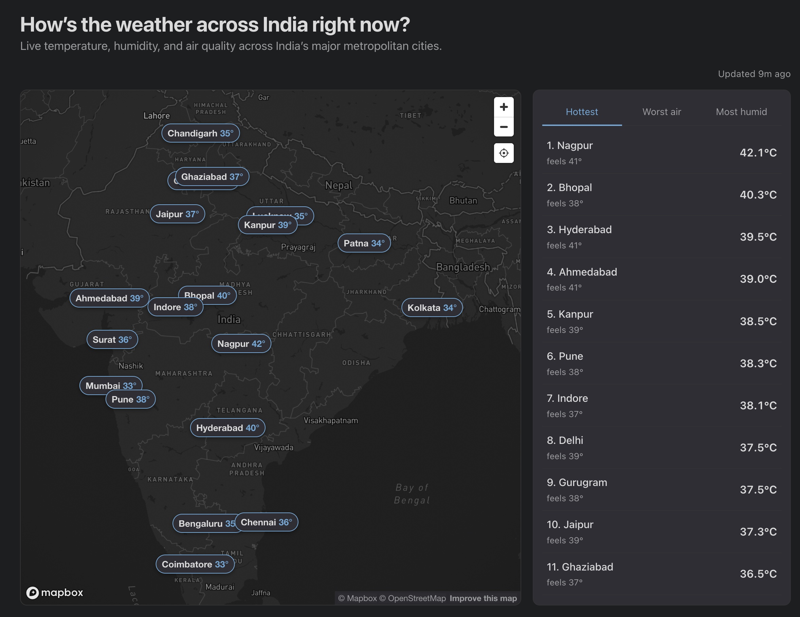
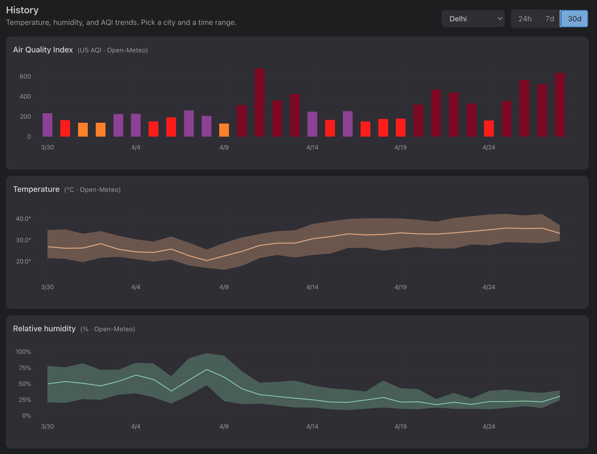
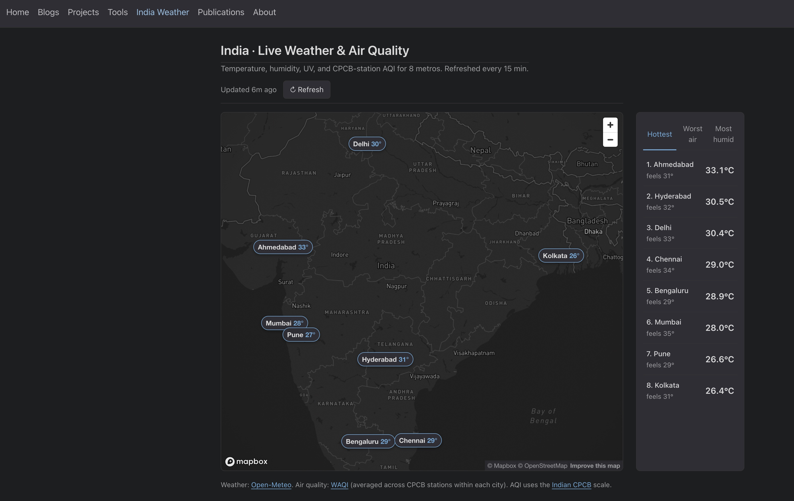
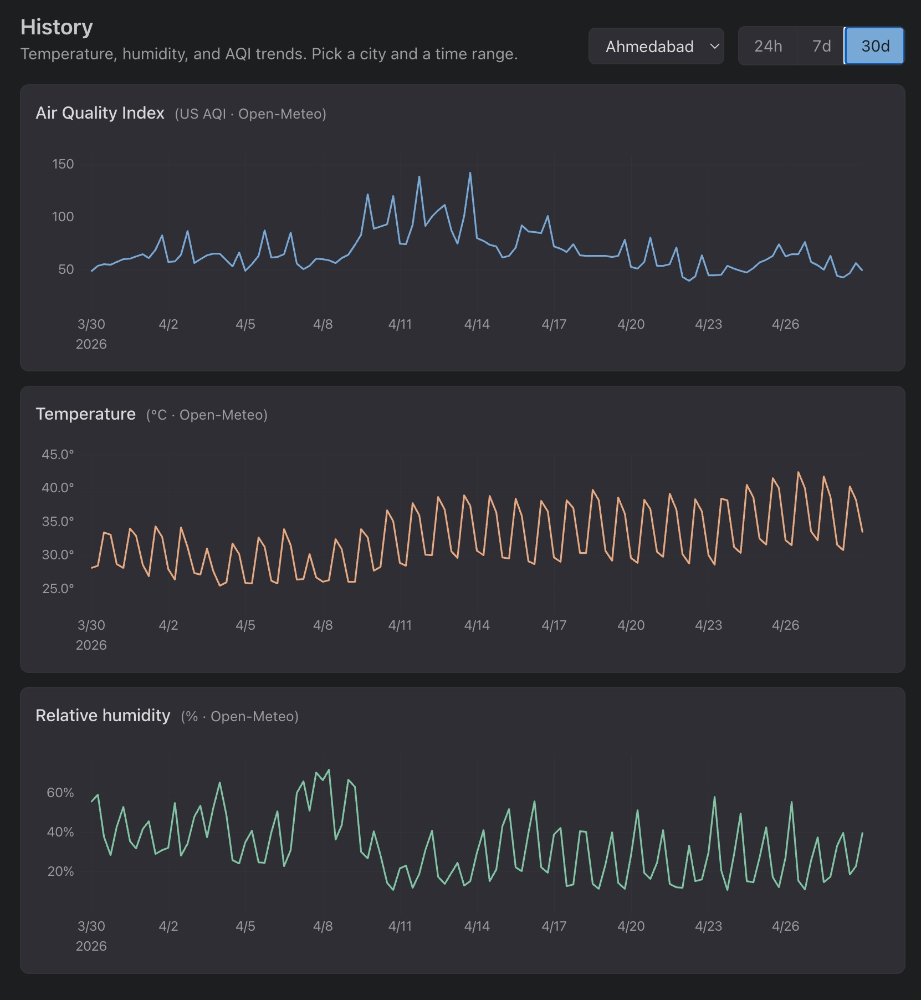
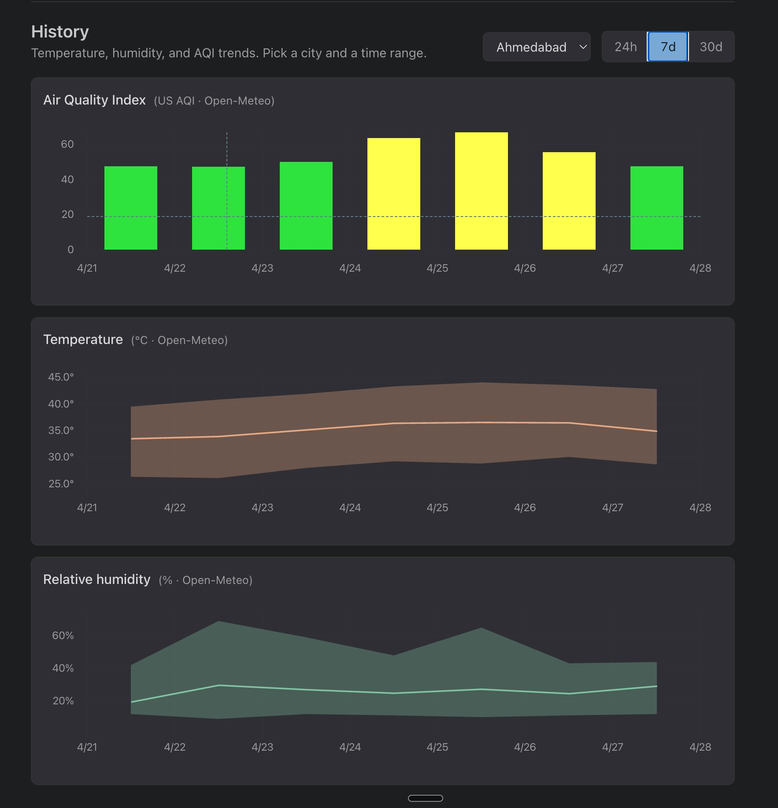
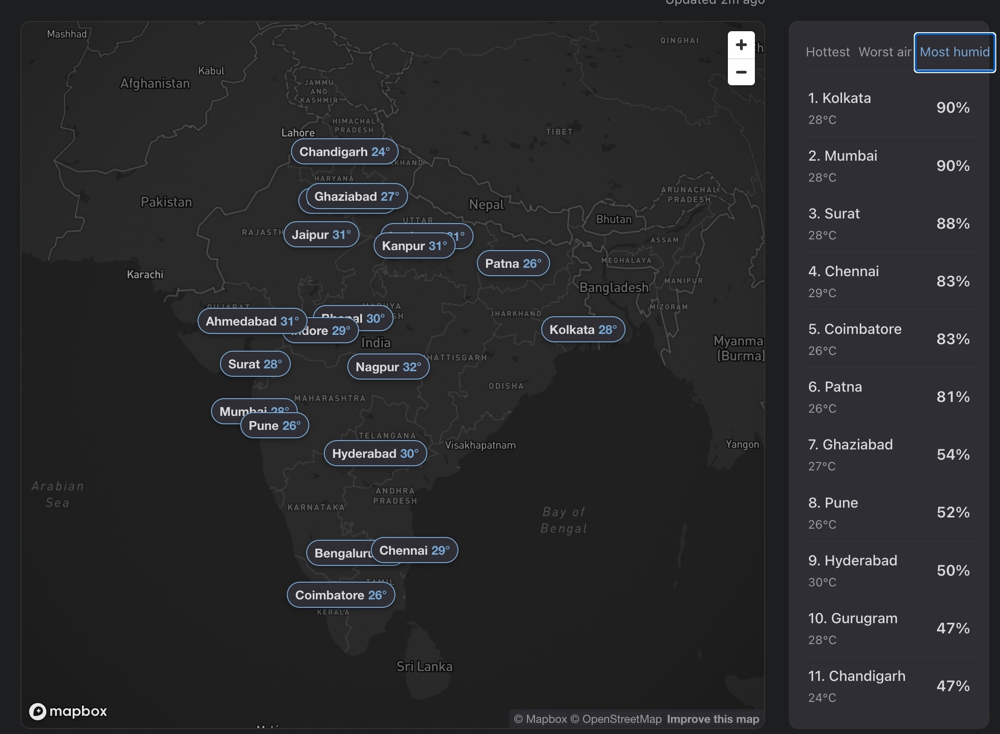
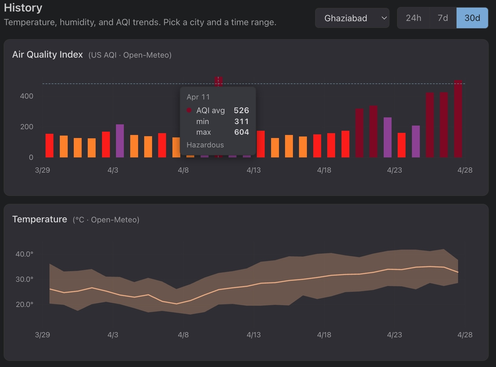
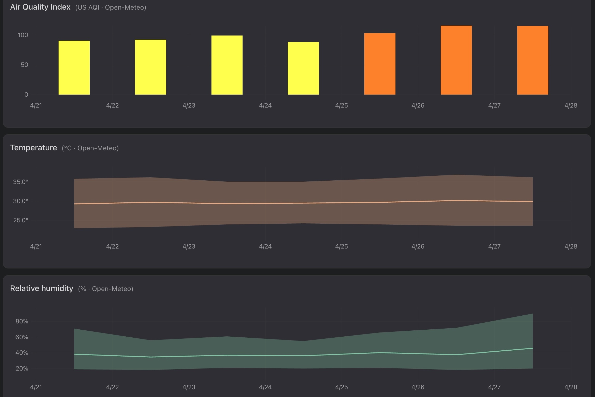
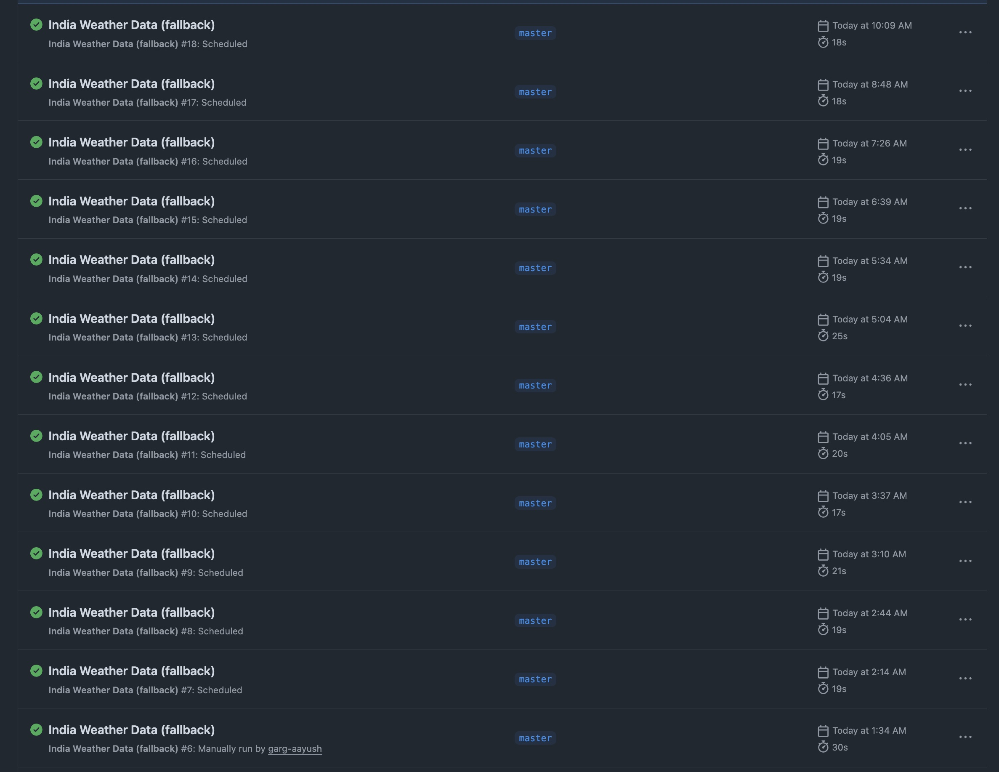
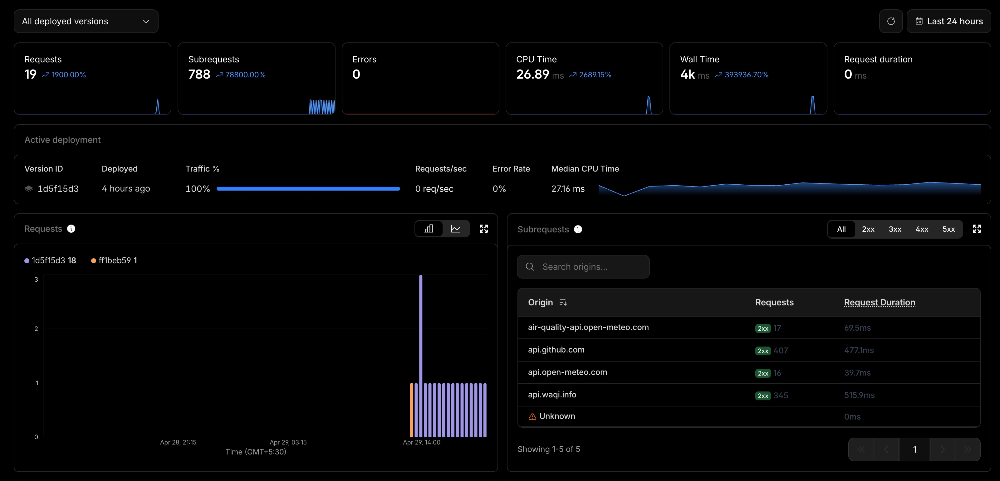

Building a Live India Weather Dashboard with Claude Code
It is summer in India with temperature soaring above 40°C in many parts and like a lot of folks here, I too have a habit of checking the temperature and humidity more often than I would like to admit. Moreover, if you are from northern or western India, you are probably also checking the AQI given how big and genuine the pollution problem is these parts.
As a fun project, I built a small dashboard that shows the weather and AQI for the major Indian cities along with the option of viewing the history over 24 hours, 7 days and 30 days. Moreover, this dashboard fetches the data every 15 minutes so more or less you have a live view of the weather and AQI for the major Indian cities.
The dashboard is live at aayushgarg.dev/india-weather.
|
 |
 |
As usual (and like most of the devs out there) I used Claude Code to build this dashboard. Also, I am an ML Researcher/Engineer, so not the brigtest when it comes to frontend and devops. This post is my reflection on how I went about building (prompting!) this dashboard in stages.
What it does
Just a quick overview of what the dashboard does:
- I have picked 20 Indian metropolitan cities and displayed them on an interactive map, with live temperature, humidity and AQI refreshed every 15 minutes
- When you click a marker or a leaderboard entry, you get 24h / 7d / 30d charts for the temperature, humidity and AQI
- The map is based on Mapbox, locked to India’s bounds
- The site is static, so fetching runs server-side on a cron and the page just reads JSON
All the numbers are fetched from Open-Meteo and WAQI:
| Metric | Live (15 min) | 24h chart | 7d / 30d charts | Source |
|---|---|---|---|---|
| Temperature | ✓ | ✓ | ✓ | Open-Meteo Forecast |
| Humidity | ✓ | ✓ | ✓ | Open-Meteo Forecast |
| Live AQI | ✓ | WAQI / CPCB stations | ||
| Historical AQI | ✓ | ✓ | Open-Meteo Air Quality (CAMS) |
Why these two options:
- I wanted free APIs with no client-exposed key which rules the paid tiers out like AccuWeather and OpenWeatherMap (even Google Maps I guess).
- Open-Meteo is free for non-commercial use and runs on the same ECMWF + GFS models behind most weather apps.
- WAQI is the more interesting pick. Its Indian feed comes directly from the CPCB ground stations (the same network behind
airquality.cpcb.gov.in) and republishes on the natural CPCB cadence of about 15 minutes, so it is effectively the official live AQI reading with a free developer API in front. - Open-Meteo’s air-quality stream is different in kind. It is a global chemistry model on a coarse grid which is good for the 24h/7d/30d historical trends but tends to under-read Indian pollution episodes compared to CPCB stations.
I built this in three loose stages, with stages 2 and 3 overlapping in practice. Below is roughly how each went.
Stage 1: brainstorming and building a working v1
When I am building something new my first instinct is to brainstorm with the coding assistant (Claude Code in my case, codex or whichever one you use) before even asking it to write a single line of code. The shape of the prompt is roughly:
here is what I want to build, here are the options I see, here are the constraints, help me decide.
For this dashboard the biggest constraint was easy to state: since the site is my personal portfolio, anything I pulled in had to fit inside a free tier with enough headroom for the kind of traffic a personal site sees.
The one line that ALWAYS helps me is appending this at the end of the prompt:
Interview me until you have 95% confidence about what I actually want, not what I think I should want.
It tells the model to keep questioning your assumptions instead of taking them at face value which is exactly what you want when you are scoping a new or large feature. Whenever I am about to integrate something I have not built before, this single line saves me a lot of time in fast tracking the development and arriving at a plan that actually fits.
For this dashboard the back-and-forth helped me take the important decisions early.
- I had said Google Maps, Claude pointed out that on a static site any key would leak in client JS and steered me to Mapbox’s free tier.
- I had said AccuWeather, it asked whether brand mattered more than accuracy for India, and pushed me to Open-Meteo + WAQI, both free and key-optional.
- It also laid out the cadence logic for me: a GitHub Actions cron every 15 minutes that writes a single JSON to a
databranch on the same repo which the page then reads on load. - By the end of the session I had a page that was live with 8 metros, a marker plus card UI and a working live tile and the data was being fetched every 15 minutes.

Full Claude Code conversation for this stage: stage-1-brainstorm-and-v1.txt.
Stage 2: improving the dashboard with history charts and UI fixes
The next thing that I wanted to do was to add history charts under the map. I wanted to be able to view the history of the temperature, humidity and AQI for each city over certain time periods. This is the first version that I made conversationally with Claude:

Obviously, this was not the best way to view the values. The 7d and 30d views looked terrible with the day-night cycle turning every chart into a sawtooth. Next, I sent Claude the screenshot and asked one question:
Currently, this is how the values look over the 7d and 30d period, I dont think that is the best way to view the values. What is the standard way to show these values?
Claude pointed me at the weather.com pattern where weather apps aggregate the values by day, show a min/max bands with a daily mean line for temp and humidity, and color the AQI bars by EPA category. A second daily cron rebuilds the 30-day window from Open-Meteo each run which looked much nicer:

Finally, I improved the UI by fixing a few small issues. Some of them you can see below:
|
 |
 |
 |
- Better labeling for the cities that sit close together, better placement of the labels and leader lines
- Locking the map to India’s bounds
- Adding a reset-view control to the map
- A few alignment and styling tweaks
Full Claude Code conversations for this stage: history charts, daily aggregates, UI polish.
Stage 3: moving the cron from GitHub Actions to Cloudflare
After the dashboard was deployed I noticed the live tile timestamps were drifting. The label said “every 15 minutes” but the GitHub Actions free-tier cron was firing erratically, sometimes 40 mins or even >1 hour late. This is usually the case with the free-tier cron jobs on GitHub Actions.

I decided to move the cron to Cloudflare Workers which has a free tier and fires within seconds of schedule.

The interesting thing for me here is that I had never used Cloudflare workers for cron jobs before. Given how good these assistants are at writing code, it wrote the code, walked me through setup steps and the live cadence has been working well since. Even unfamiliar backend infra is something you can prompt your way through (obviously you should have the fundamental knowledge to nudge it in the right direction).
Full Claude Code conversation for this stage: Cloudflare Worker migration.
What I would carry forward
A few things from this build that I will keep doing:
- Brainstorm before you build: Asking the model to interview you back, with a 95% confidence target, saves a lot of rework downstream. This has always worked for me!
- Let it disagree with you: Mapbox over Google Maps, daily bands over raw sawtooth points, Cloudflare over GitHub Actions. None of those calls were mine. However, make sure your fundamental knowledge is strong enough to nudge it in the right direction.
- Iterate from screenshots: A picture of what looks wrong plus one question is usually enough to move forward. I also use playwright mcp to let Claude test the UI (though they at times consume a lot of tokens).